Introduction to Cyclical Ecological Trajectory Analysis (CETA)
Nicolas Djeghri/Miquel De Cáceres
2025-04-04
Source:vignettes/IntroductionCETA.Rmd
IntroductionCETA.Rmd1. Introduction
1.1 Going round in cycles, but go somewhere! What CETA does, and where it sits
Cyclical Ecological Trajectory Analysis (CETA) is an extension of Ecological Trajectory Analysis (ETA) allowing it to handle trajectories presenting regular cyclical dynamics (e.g. seasons, day-night cycle):
- Djeghri et al. (in preparation) Going round in cycles, but going somewhere: Ecological Trajectory Analysis as a tool to decipher seasonality and other cyclical dynamics.
Before starting, it is important to clarify what CETA does and what it does not, as well as what we mean by regular cyclical dynamics.
Unlike many statistical procedures dedicated to time series, CETA does not aims to detect cyclicity. Rather, CETA aims at describing it and gaining insights into long-term changes in cyclical dynamics. Cyclicity must be known a priori from knowledge of the system under study or from another statistical analysis (e.g. eigenvector maps).
By “regular cyclical dynamics” we mean cycles that are ‒ most often ‒ the product of the very regularly paced astronomic forcings (seasons, day-night cycles, tides). Describing seasonal dynamics was in fact the prime motivation in designing CETA. CETA is therefore not designed to address many other dynamics that ecologists would refer to as “cyclical” such as disturbance-recovery cycles, because the time duration of those cycles is not fixed (i.e. they are not periodic). These may be better addressed with clever use of the more general ETA framework. The primary research field we envision for CETA lies in a middle ground between phenology, community, and ecosystem ecology.
2. General approach of CETA
2.1 The vocabulary of CETA
CETA is perhaps a bit heavy-handed on the vocabulary. We have two words for time and recognize no less than three different types of trajectories! Let’s start with the way we refer to time: CETA distinguishes “times”, representing linear time, and “dates” representing circular time. For instance, the 17th of December recurs every year, in that sense, we call it a date. However, the 17th of December 2009 occurred only once (and BBC radio is grateful). Then, there is the three types of trajectories that CETA distinguishes and characterizes:
- Cyclical trajectories: Long trajectories presenting cyclical dynamics of a given periodicity (e.g. annual). They are the basis of CETA. They also constitute the inputs from which the two other types of trajectories will be derived.
- Cycles: Sub-divisions of a cyclical trajectory of duration equal to its periodicity.
- Fixed-date trajectories: Trajectories joining the ecological states sampled at the same date in a given cyclical trajectory (for instance, in a multi-annual monthly sampled time series, the trajectory joining the ecological states obtained for March of year 1, March of year 2, etc…).
All this vocabulary helps CETA being a little more time-explicit than regular ETA. Let’s build a toy dataset with one cyclical trajectory composed of three cycles to make this more visual:
#Let's define our toy sampling times:
timesToy <- 0:30 #The sampling times of the time series
cycleDurationToy <- 10 #The duration of the cycles (i.e. the periodicity of the time series)
datesToy <- timesToy%%cycleDurationToy #The dates associated to each times
#And state where the sampling occurred, for now let's only use one site "A"
sitesToy <- rep(c("A"),length(timesToy))
#Then prepare some toy data:
#Prepare a noise and trend term to make the data more interesting
noise <- 0.05
trend <- 0.05
#Make cyclical data (note that we apply the trend only to x):
x <- sin((timesToy*2*pi)/cycleDurationToy)+rnorm(length(timesToy),mean=0,sd=noise)+trend*timesToy
y <- cos((timesToy*2*pi)/cycleDurationToy)+rnorm(length(timesToy),mean=0,sd=noise)
matToy <- cbind(x,y)
#And express it as a distance matrix (ETA is based on distances, increasing its generality)
dToy <- dist(matToy)As with classical ETA, we define the cyclical trajectory using
defineTrajectories():
xToy <- defineTrajectories(dToy, sites = sitesToy, times = timesToy)Note that we did not define surveys, but added survey times as
defined in timesToy. We can visualize the cyclical
trajectory using the function trajectoryPCoA(), as we would
do for any trajectory within ETA.
trajectoryPCoA(xToy,
lwd = 2,length = 0.2)We see that the cyclical trajectory is composed of three cycles that are not yet explicitly identified. Similarly, the fixed-date trajectories are not isolated. This is the goal of the “extract” functions in CETA.
2.2 Extracting cycles and fixed-date trajectories
In CETA the “extract” functions take one or more cyclical
trajectories and return a distance matrix d and
associated descriptors allowing to isolate cycles or
fixed-date trajectories (respectively functions
extractCycles() and
extractFixedDateTrajectories()) for further analysis.
2.2.1 Fixed-date trajectories
Let’s start with extractFixedDateTrajectories() as it is
the simplest one to handle:
fdtrajToy <- extractFixedDateTrajectories(xToy,
cycleDuration = cycleDurationToy,
namesFixedDate = paste("M",1:10))Note that we haven’t specified datesToy as a value for
argument dates. This is because the CETA functions assume
default values times%%cycleDuration which means the taking
the modulo of cycle duration and works perfectly fine here. In cases
there is an offset between dates and times (e.g. times = 0 does not
correspond to dates = 0), a different dates argument must
be provided.
Let’s look at the output given by
extractFixedDateTrajectories():
class(fdtrajToy)## [1] "fd.trajectories" "trajectories" "list"The class fd.trajectories identifies the object as a
subclass of trajectories. Its elements are the usual
ones:
names(fdtrajToy)## [1] "d" "metadata"d is a distance matrix and metadata is a
data frame containing the information necessary to read it as a
descriptor of fixed-date trajectories.
head(fdtrajToy$metadata)## sites fdT surveys times dates
## 1 A A_fdT_M 1 1 0 0
## 2 A A_fdT_M 2 1 1 1
## 3 A A_fdT_M 3 1 2 2
## 4 A A_fdT_M 4 1 3 3
## 5 A A_fdT_M 5 1 4 4
## 6 A A_fdT_M 6 1 5 5The column fdT (for fixed-date trajectories) indicates
to which fixed-date trajectories the different ecological states in
d belong. The names in fdT are built by
concatenating the site (especially useful if several cyclical
trajectories are studied in parallel) with the string fdT
and the name given as argument in
extractFixedDateTrajectories() (if not provided, the date
is used as default).
Using a combination of the new distance matrix d and its
descriptors in metadata, the output of
extractFixedDateTrajectories() can be fed in other ETA
functions to study fixed-date trajectories. Whenever the ETA functions
identify the input object as one of class fd.trajectories,
they use the values of fdT column as substitute for
sites. For instance we can compute the directionality of
the fixed-date trajectories using:
trajectoryDirectionality(fdtrajToy)## A_fdT_M 1 A_fdT_M 2 A_fdT_M 3 A_fdT_M 4 A_fdT_M 5 A_fdT_M 6 A_fdT_M 7
## 0.9789766 0.9960968 0.9460855 0.9766767 0.8485723 0.8511184 0.9552937
## A_fdT_M 8 A_fdT_M 9 A_fdT_M 10
## 0.9713379 0.8373815 0.9803382Or the distances between fixed-date trajectories using:
trajectoryDistances(fdtrajToy)## A_fdT_M 1 A_fdT_M 2 A_fdT_M 3 A_fdT_M 4 A_fdT_M 5 A_fdT_M 6
## A_fdT_M 2 0.3180005
## A_fdT_M 3 0.8994350 0.6030857
## A_fdT_M 4 1.4196563 1.1605444 0.6752462
## A_fdT_M 5 1.8338956 1.6139284 1.1303706 0.5616614
## A_fdT_M 6 2.0920368 1.9366669 1.5511119 1.0166316 0.5902681
## A_fdT_M 7 1.8289310 1.7852622 1.6034532 1.2871889 0.9288005 0.5353211
## A_fdT_M 8 1.4378364 1.5341818 1.6299085 1.4657928 1.2942500 1.0355476
## A_fdT_M 9 0.9246206 1.1213243 1.4635933 1.5414729 1.5853991 1.5146532
## A_fdT_M 10 0.3281008 0.6247820 1.2423826 1.5646013 1.8388043 1.9713595
## A_fdT_M 7 A_fdT_M 8 A_fdT_M 9
## A_fdT_M 2
## A_fdT_M 3
## A_fdT_M 4
## A_fdT_M 5
## A_fdT_M 6
## A_fdT_M 7
## A_fdT_M 8 0.5581547
## A_fdT_M 9 1.0941022 0.6654062
## A_fdT_M 10 1.6362000 1.2111657 0.6680331For visualization, it is possible to use the general
trajectoryPCoA() function as:
trajectoryPCoA(fdtrajToy,
lwd = 2,length = 0.2,
traj.colors = c("blue","red","black","grey","orange","green3","brown","purple","pink","yellow"))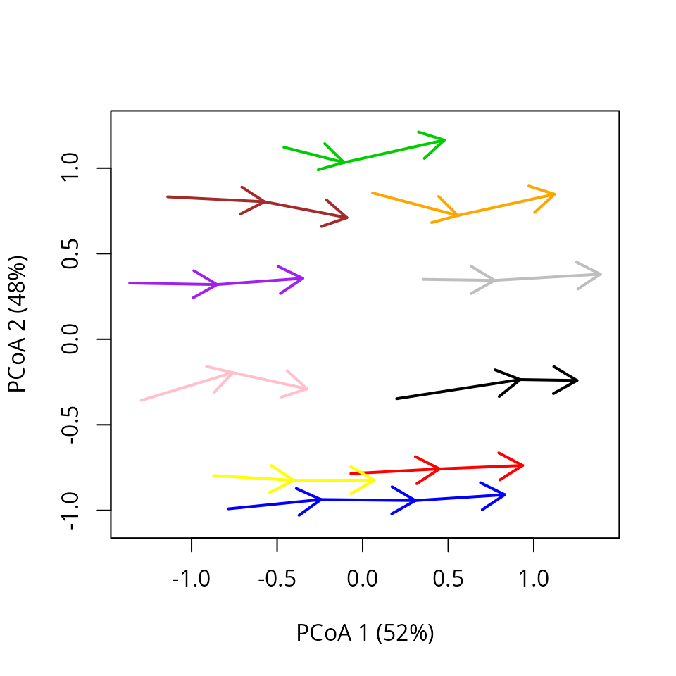
But CETA provides a plotting function dedicated to fixed date trajectories that uses a circular color palette for the fixed dates trajectories and can represent the original cyclical trajectory:
fixedDateTrajectoryPCoA(fdtrajToy,
lwd = 2, length = 0.2)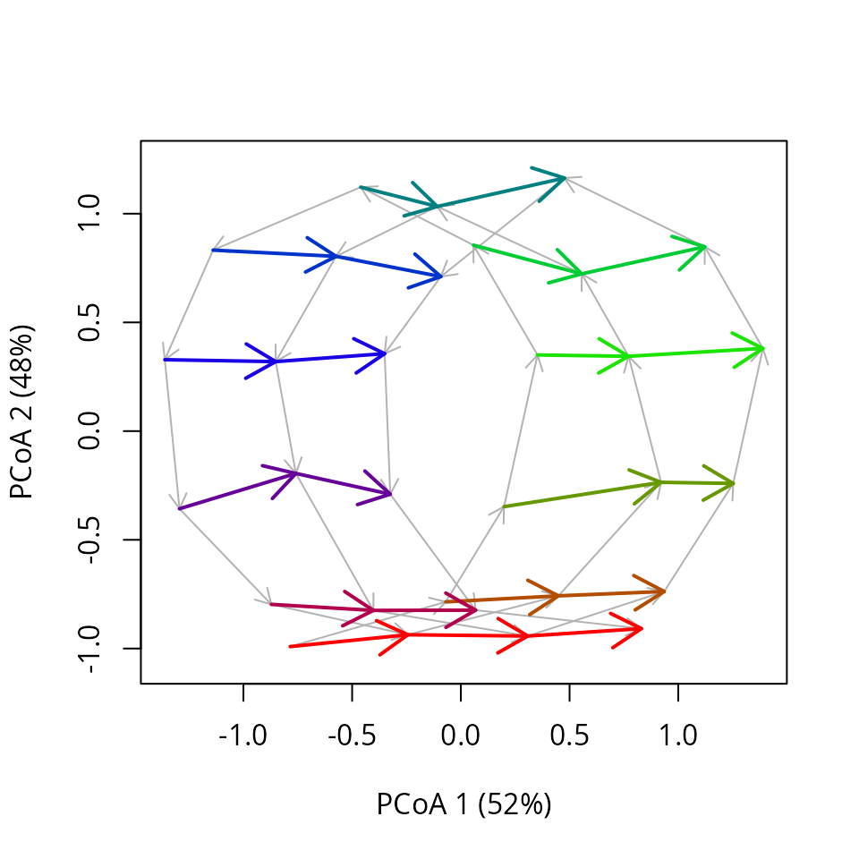
Note that we find, as expected, 10 fixed-date trajectories (one for each date of each cycle). They are all linear and pretty much parallel, which is what we expect given the trend that we put in our toy dataset.
2.2.2 Cycles
Let’s now look at how extraction works for cycles.
The function extractCycles() works very similarly to
extractFixedDateTrajectories(). Few differences are that:
it does not allows to specify names for cycles (they are by default the
concatenation of site names and “C1”, “C2” etc…); it allows to change
the startdate of the cycles (for instance allowing to
flexibly choose when a cycle start: e.g. an annual cycle does not
always need to start in January).
cycleToy <- extractCycles(xToy,
cycleDuration = cycleDurationToy)Just like extractFixedDateTrajectories(),
extractCycles() has outputs d and
metadata:
names(cycleToy)## [1] "d" "metadata"When inspecting metadata, we find the column
cycles, containing the unique names of all cycles,
analogously to column fdT in the output of
extractFixedDateTrajectories(). In addition and
importantly, extractCycles() returns the column named
internal, which has no analog in
extractFixedDateTrajectories():
head(cycleToy$metadata)## sites cycles surveys times dates internal
## 1 A A_C1 1 0 0 TRUE
## 2 A A_C1 2 1 1 TRUE
## 3 A A_C1 3 2 2 TRUE
## 4 A A_C1 4 3 3 TRUE
## 5 A A_C1 5 4 4 TRUE
## 6 A A_C1 6 5 5 TRUEThe internal column gives an information on internal
vs external ecological states. This is an important distinction
that solve what we call the “December-to-January segment
problem” but imposes some peculiar handling of internal or
external ecological states (generally handled automatically within ETA
and CETA functions).
2.2.3 Beware of the external ecological states: the “December-to-January segment problem”
Let’s imagine we sampled a site monthly (Jan, Feb, …, Dec) during many years (, …). How do we cut this cyclical trajectory into cycles? One possibility is to make cycles out of the segments joining all the months of year , from January to December (12 ecological states, joined by 11 segments). The problem then is that the segment joining December of year to January of year is ignored. We can then extend the cycles to the first ecological state of the next cycle (January of year , 13 ecological states 12 segments). This correctly includes the 12 segments in the cycle but implies that the cycle contains twice the month of January. We refer to this as the “December-to-January segment problem”.
In CETA, we solve this issue by distinguishing internal and external ecological states. In the case above, January of year would be considered external whereas other ecological states would be internal. Broadly speaking, external ecological states are included in computations relying on the cycle segments, but excluded in computations relying on cycle ecological states. More specifically the metrics and operations in CETA that require to remove, or apply a special treatment to external ecological states are:
- Centering, where internal states are used for determining cycle center but the centering operation applies to external states as well.
- PCoA for visualization (when several cycles are studied, some ecological states are duplicated and need to be removed prior to PCoA).
- Computation of trajectory variability, where external ecological states must be removed.
All this is readily handled for you by functions
centerTrajectories(), cyclePCoA(), and
trajectoryVariability()respectively, but it’s always good
to be aware of what’s going on under the hood!
In addition, you might have ideas to study cycles outside of the CETA/ETA framework. If so, please go ahead! But remember that most approaches rely on the concept of points, not segments, so external ecological states should probably be removed beforehand.
Let’s explore the outputs of extractCycles() to make all
this clearer:
## [1] 31## [1] 33Note that, in this example, the distance matrix returned by
extractCycles() describes two more ecological states than
the original distance matrix. This is because
extractCycles() duplicates ecological states if they are
shared by two cycles (coming back to the example above, January of year
belongs to the cycle describing year
AND the cycle describing year
).
Such duplicated ecological states exist always in an internal and an
external version. This duplication allows to easily, and correctly,
compute most of the ETA metrics for cycles such as, for instance,
distances. Whenever they identify the input object as one of class
cycles, the ETA functions use the values of the
cycles column as substitute for sites,
allowing to compute metrics about the cycles. For instance
distances:
trajectoryDistances(cycleToy)## A_C1 A_C2
## A_C2 0.5231294
## A_C3 0.8695007 0.5047277However, when visualizing through PCoA, the duplicated ecological
states must be removed. This is handled by the dedicated function
cyclePCoA():
cyclePCoA(cycleToy,sites.colors="orangered")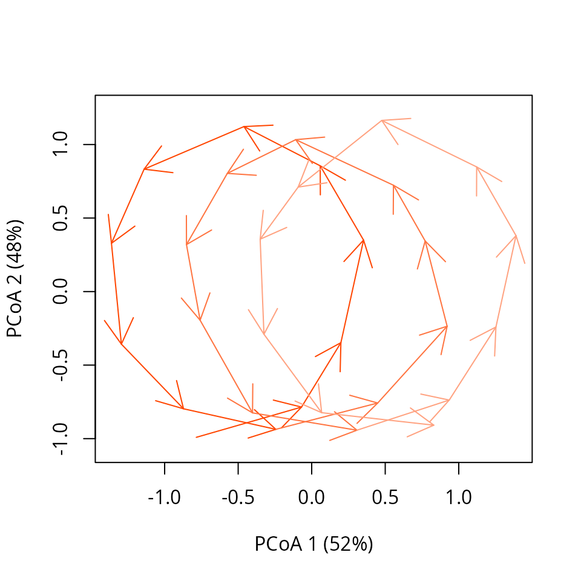 By default, the function applies a color gradients to cycles to represent time: darker cycles are at the start of the time series and clearer ones at the end.
It is possible to center the cycles (for instance to compare only
their shapes, irrespective of their positions). The function
centerTrajectory() recognizes cycleToyas an
object of class cycles and performs the centering with
appropriate handling of external ecological states:
cycleToy_cent <- centerTrajectories(cycleToy)Of course after centering,the distances between cycles will go down:
trajectoryDistances(cycleToy_cent)## A_C1 A_C2
## A_C2 0.14729156
## A_C3 0.09448688 0.12116359For visualization, if cycles are centered, the duplicated ecological
states will no longer overlap, so they must be retained in PCoA. This is
also handled by the function cyclePCoA()but the
user MUST state that the cycles have been centered:
cyclePCoA(x = cycleToy_cent, sites.colors = "orangered", centered = TRUE)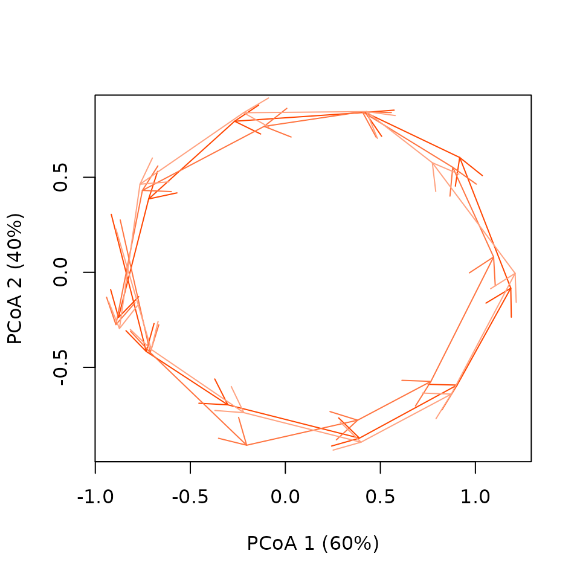
2.3 Assessing the degree of convexity in cycles
Cycle convexity is estimated using function
cycleConvexity(). This metric is the cyclical equivalent of
directionality for non-cyclical trajectories. A cycle with high
convexity is interpreted as simpler than a cycle with low convexity. Low
convexity is due to concavities or “bends” in more than two dimension
indicative of a more complex (or nosier) cyclical dynamic. Importantly,
the function cycleConvexity() does not uses the outputs of
extractCycles(). This is because the original full cyclical
trajectory is needed for computation. Instead,
cycleConvexity() take the same inputs as
extractCycles():
cycleConvexity(xToy,
cycleDuration = cycleDurationToy)## A_C1 A_C2 A_C3
## NA 0.9914019 0.9915258Note that the function returns a NA for the first cycle.
This is because the function needs to associate an angle to each
internal ecological states of the cycles. Since the first cycle starts
with the first ecological state of the whole time series, its associated
angle cannot be computed, and neither the convexity of the cycle.
2.4 Computing cyclical shifts: phenological advances and delays
A last novelty of CETA is to provide a way to generalize the concept
of phenological advances and delays for multidimensional data such as
those used in community ecology. The function that computes cyclical
shifts is cycleShifts(). By default, it will estimate all
the shifts that are possible to compute on a given cyclical trajectory.
The computation relies on geometrical projection and comparison of
ecological states of interest to reference cycles. The computation time
can be long for large datasets. The function takes the same inputs as
extractCycles():
cycleShifts(xToy, cycleDuration = cycleDurationToy)## sites dateCS timeCS timeRef timeScale cyclicalShift
## 1 A 0 20 10 10 0.06323295
## 2 A 1 21 11 10 -0.05501887
## 3 A 2 22 12 10 -0.21375250
## 4 A 3 23 13 10 -0.04636286
## 5 A 4 24 14 10 0.00000000
## 6 A 5 15 5 10 0.25169988
## 7 A 5 25 5 20 0.08723782
## 8 A 5 25 15 10 -0.03541132
## 9 A 6 16 6 10 -0.04901553
## 10 A 7 17 7 10 0.01198407
## 11 A 8 18 8 10 -0.24314511
## 12 A 9 19 9 10 -0.00196457The output gives the cycleShifts() computed in the same
units as the input time, with positive values indicating
advance and negative values indicating delay. The other columns give
information on what exactly was compared. We will come back to this
output in the real example below.
2.5 Summary of the CETA approach
Here is a visual summary of the CETA approach:
![The CETA functions (blue) allow to format data to describe fixed-date trajectories or cycles. The outputs of functions extractFixedDateTrajectories() and extractCycles() can then be used as inputs for other ETA functions (orange) to obtain the metrics of interest. Keep in mind that functions cycleConvexity() and cycleShifts(), perhaps somewhat counter-intuitively, take the same inputs as extractCycles(). Remember also to tell cyclePCoA() whether the cycles were centered or not before plotting. Finally, beware of external ecological states when studying cycles outside of the ETA framework.](CETA_workflow.png)
extractFixedDateTrajectories() and
extractCycles() can then be used as inputs for other ETA
functions (orange) to obtain the metrics of interest. Keep in mind that
functions cycleConvexity() and cycleShifts(),
perhaps somewhat counter-intuitively, take the same inputs as
extractCycles(). Remember also to tell
cyclePCoA() whether the cycles were centered or not before
plotting. Finally, beware of external ecological states when studying
cycles outside of the ETA framework.3. Real data example: Zooplankton of the North Sea 1958-2021
3.1 About the data
The data present here describes the zooplankton community in the
North Sea sampled by the Continuous
Plankton Recorder (CPR) survey. We re-worked the raw data provided
by the CPR survey (DOI:
10.17031/66f12be296d70) into two monthly-resolved time series of the
commonest zooplankton taxa in the Northern North Sea (NNS)
and the Southern North Sea (SNS). In our data processing,
we performed a smoothing by taking a rolling average (for each month, we
averaged 5 values: a 3 months window + the corresponding month of the
previous and next years). We finally Hellinger-transformed the abundance
data to make them amenable to ecological diversity study. Hellinger
transformation implies that only relative variations in abundances are
studied here.
Let’s call the data:
data("northseaZoo")
names(northseaZoo)## [1] "Hellinger" "times" "sites"
head(northseaZoo$times)## [1] 1958.042 1958.125 1958.208 1958.292 1958.375 1958.458northseaZoo contains three elements:
Hellinger with the Hellinger-transformed abundances,
times with time expressed in years (the decimals actually
correspond to a way of encoding the months as fractions of years:
1:12/12-1/24), and sites describing whether a
community sample is from the Northern NNS or Southern
SNS North Sea.
3.2 Get a dissimilarity matrix and define cyclical trajectories
ETA works from dissimilarity matrices. So a first step in analyzing
the North Sea zooplankton data is to go from the Hellinger
matrix to a distance matrix. Luckily for us, euclidean distances
computed on Hellinger-transformed community data yield Hellinger
distances between communities. We can therefore use the
dist function from base R.
northseaZoo$Dist <- dist(northseaZoo$Hellinger)To be analyzed using ETA, the distance matrix has to be complemented
with information regarding sites and surveys to get a object of class
trajectories using defineTrajectories().
x_northseaZoo <- defineTrajectories(d = northseaZoo$Dist,
sites = northseaZoo$sites,
times = northseaZoo$times)3.3 Visualize the cyclical trajectories
From now on, if you are executing the code live, bear with us a
little bit as the time series are rather long, so your computer may need
some time to display the graphics or compute some metrics.
As before, we can use the trajectoryPCoA() function to
display the two cyclical trajectories:
trajectoryPCoA(x_northseaZoo,
traj.colors = c("blue","red"),
length = 0.05)
legend(x="topleft",col=c("blue","red"),pch=15,unique(northseaZoo$sites))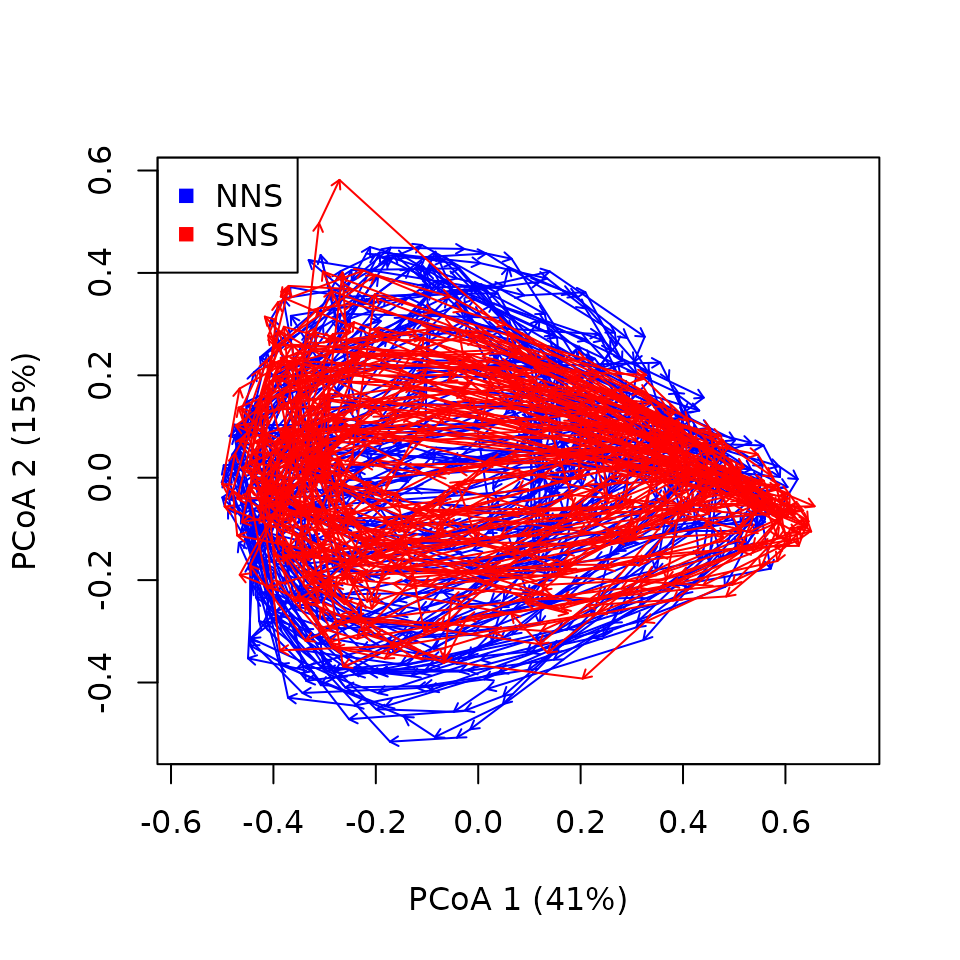 Things indeed seem to turn and present clear cycles: This is not surprising as seasonality is a very prominent factor in driving temperate zooplankton community dynamics. But from such a representation it is hard to distinguish clear patterns. Let’s use CETA!
3.4 Seasonal cycles
We can use the function extractCycles() to get data in a
format describing the seasonal cycles:
cyclesNSZoo <- extractCycles(x_northseaZoo,
cycleDuration = 1,
minEcolStates = 12)
#Note that we use here a cycleDuration of 1 (everything is expressed in years),
#we also use the minEcolStates argument to say that we want to only keep cycles that
#have at least 12 ecological states: In our case this is as complete as it getsLet’s visualize the cycles!
cyclePCoA(cyclesNSZoo,
sites.colors = c("blue","red"),
length = 0.05,
print.init.points = TRUE)
legend(x="topleft",col=c("blue","red"),pch=15,unique(northseaZoo$sites))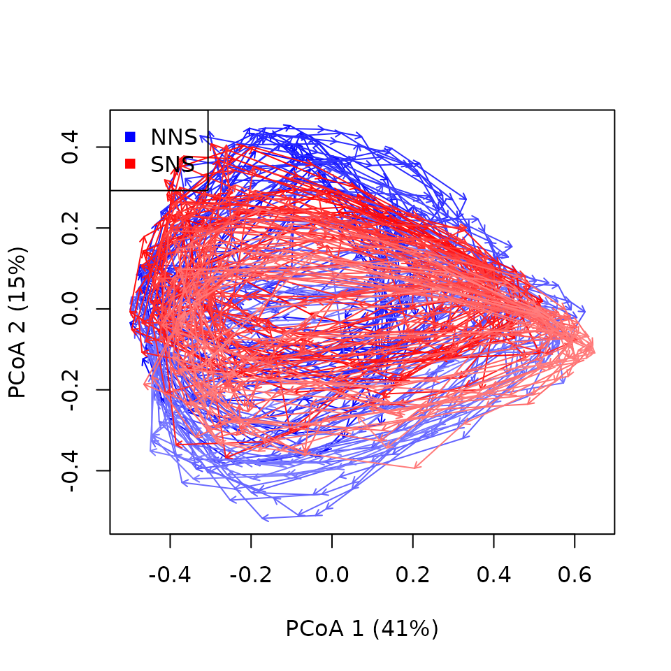
It is still a very busy graph but note that some data points are not
there anymore (such as the outlier from SNS far on PCoA axis 2). This is
because we asked extractCycles() to only take complete
years (minEcolStates = 12). We can nonetheless see that
more recent years (clearer lines) seem to be moving towards negative
values of PCoA axis 2 suggesting a shift in zooplankton community
composition across the whole time series and in both parts of the North
Sea. The points (printed through argument
print.init.points) show cycles’ starts (in this case
January months) and help interpretation: winters are towards negative
values of PCoA 1, summers towards positive values of PCoA 1.
We can then use the outputs of extractCycles() contained
in cycleNSZoo as inputs for other ETA function and assess
some interesting characteristics of the seasonal cycles of North Sea
zooplankton. For instance one can obtain cycle length:
cyclesZooLengths <- trajectoryLengths(cyclesNSZoo)And cycle convexity, remembering that this metric is not obtained
using the output of extractCycles(), but using the same
inputs as for extractCycles():
cyclesZooConv <- cycleConvexity(x_northseaZoo,
cycleDuration = 1,
minEcolStates = 12)Cycle length and cycle convexity help describing the shapes of cycles in a way mirroring trajectory length and directionality in non-cyclical ETA. Let’s graph the outputs:
#First let's build some broad descriptive statistics for individual cycles: what year, and what site?
yearCycles <- floor(tapply(cyclesNSZoo$metadata$times,cyclesNSZoo$metadata$cycles,min))
sitesCycles <- tapply(cyclesNSZoo$metadata$sites,cyclesNSZoo$metadata$cycles,unique)
#Doing some reordering
yearCycles <- yearCycles[unique(cyclesNSZoo$metadata$cycles)]
sitesCycles <- sitesCycles[unique(cyclesNSZoo$metadata$cycles)]
#put all descriptors together
StatCyclesZoo <- data.frame(sitesCycles,yearCycles,cyclesZooLengths$Path,cyclesZooConv)
SNScycles <- subset(StatCyclesZoo,sitesCycles=="SNS")
NNScycles <- subset(StatCyclesZoo,sitesCycles=="NNS")
#put that in the format of a complete time serie (recreating the holes if any)
rownames(SNScycles) <- SNScycles$yearCycles
rownames(NNScycles) <- NNScycles$yearCycles
SNScycles <- SNScycles[as.character(1958:2021),]
NNScycles <- NNScycles[as.character(1958:2021),]
#First figure: Lengths
plot(SNScycles$yearCycles,SNScycles$cyclesZooLengths.Path,type="l",las=1,ylab="Cycle lengths",xlab="Years",ylim=c(2.5,5),col="red")
points(NNScycles$yearCycles,NNScycles$cyclesZooLengths.Path,type="l",col="blue")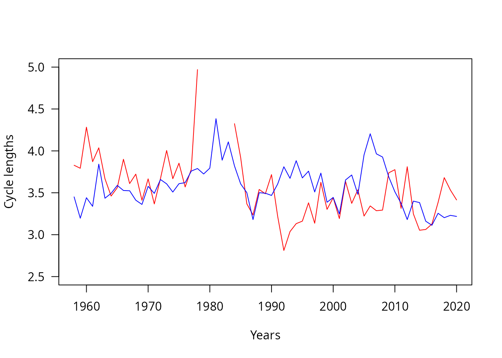
#Second figure: Convexity
plot(SNScycles$yearCycles,SNScycles$cyclesZooConv,type="l",las=1,ylab="Cycle convexity",xlab="Years",ylim=c(0.25,0.5),col="red")
points(NNScycles$yearCycles,NNScycles$cyclesZooConv,type="l",col="blue")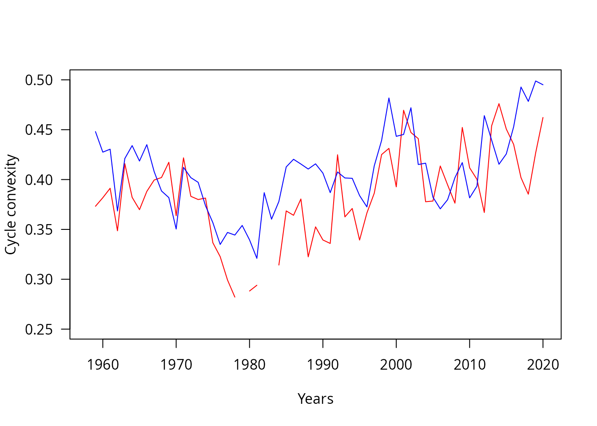
Cycle lengths seems to have decreased in the 1980s while convexity seems to present a “jump” around year 2000. From previous studies on the CPR time series, it is known that regime shifts occurred in the plankton community at those two periods. For instance, around 2000, echinoderm larvae became seasonally dominant in the North Sea. It is possible that the “jump” in convexity is linked to this event, as a large dominance of one taxa in a given season would indeed pull the cycles towards one dimension only, possibly increasing cycle convexity.
Let’s now look at the distances between cycles:
cyclesZooDistances <- trajectoryDistances(cyclesNSZoo)Just like distances between ecological states, distances between cycles can be visualized by principal coordinates analysis (PCoA) putting us in the “space of cycles”:
colPoints <- c("red","blue")
names(colPoints) <- c("SNS","NNS")
plot(PCoAZoo$vectors[,1:2],asp=1,col=NA,
xlab=paste("PCoA 1 (",round(PCoAZoo$values$Relative_eig[1]*100,2)," %)",sep=""),
ylab=paste("PCoA 2 (",round(PCoAZoo$values$Relative_eig[2]*100,2)," %)",sep=""))
text(PCoAZoo$vectors[,1:2],as.character(yearCycles),col=colPoints[sitesCycles])
legend(x="topleft",col=c("blue","red"),pch=15,unique(northseaZoo$sites))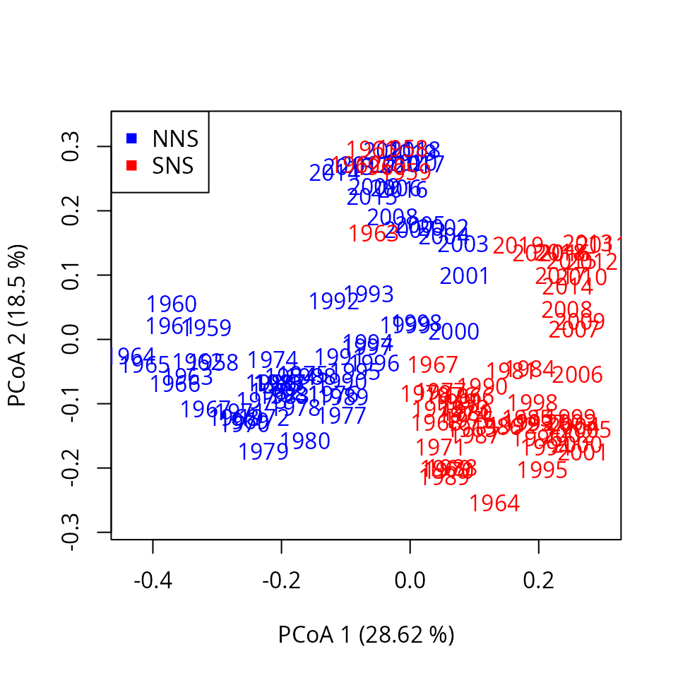
We can see from this graph that the Northern and Southern North Sea present parallel changes in seasonal dynamics while maintaining their differences during the whole time series. An important change seem to have occurred around year 2000 in agreement with previous studies that detected a regime shift around that time.
You know what’s fun? We now have two sets of time-ordered “ecological states” (more ecological dynamics to be fair) defined in a distance matrix. This is all we need to do some trajectory analysis. We can thus perform what we call “second-order” trajectory analysis using the distance between cycles as our distance matrix. We wont go in the details here but here is the corresponding graph as an appetizer:
x_second_order <- defineTrajectories(d = cyclesZooDistances,
sites = sitesCycles,
surveys = yearCycles)
trajectoryPCoA(x_second_order,
traj.colors=c("blue","red"),
length=0.05)
legend(x="topleft",col=c("blue","red"),pch=15,unique(northseaZoo$sites))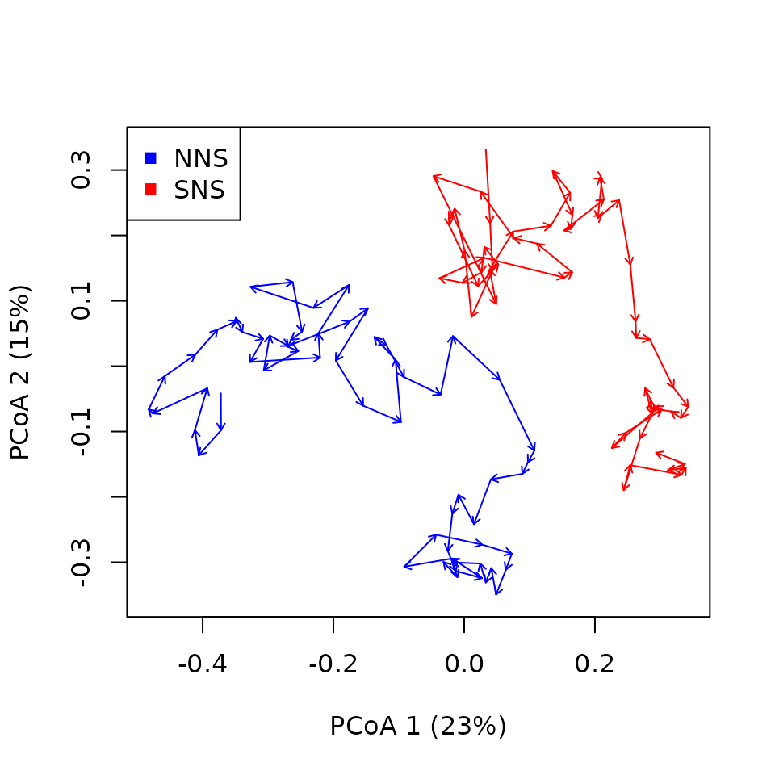
Note that the two PCoA do not represent the same variance on their first and second axes. This is due to differences in the correction method used for negative eigenvalues (ignored in the first case, application of Cailliez correction in the second case).
3.5 Fixed-date trajectories
Let’s now look at the fixed-date trajectories. First prepare the data
using extractFixedDateTrajectories():
fdtrajNSZoo <- extractFixedDateTrajectories(x_northseaZoo,
cycleDuration = 1,
namesFixedDate =
c("Jan","Feb","Mar","Apr","May","Jun","Jul","Aug","Sep","Oct","Nov","Dec"))We can then visualize the fixed date trajectories using the dedicated
function fixedDateTrajectoryPCoA():
fixedDateTrajectoryPCoA(fdtrajNSZoo,
sites.lty=c(1,2)) Hum, with such a big dataset, this is not the clearest graph! Let’s look
at some summary metrics instead.
Hum, with such a big dataset, this is not the clearest graph! Let’s look
at some summary metrics instead.
As we did for cycles, we can compute shape metrics on fixed-date trajectories:
fdtrajZooLengths <- trajectoryLengths(fdtrajNSZoo)
fdtrajZooDir <- trajectoryDirectionality(fdtrajNSZoo)And put them in a convenient dataframe:
#descriptive stats
monthFDT <- tapply(fdtrajNSZoo$metadata$dates,fdtrajNSZoo$metadata$fdT,min)
sitesFDT <- tapply(fdtrajNSZoo$metadata$sites,fdtrajNSZoo$metadata$fdT,unique)
#reordering
monthFDT <- monthFDT[unique(fdtrajNSZoo$metadata$fdT)]
sitesFDT <- sitesFDT[unique(fdtrajNSZoo$metadata$fdT)]
#put all descriptors together
StatFDTZoo <- data.frame(sitesFDT,monthFDT,fdtrajZooLengths$Path,fdtrajZooDir)
SNSfdT <- subset(StatFDTZoo,sitesFDT=="SNS")
NNSfdT <- subset(StatFDTZoo,sitesFDT=="NNS")
#put them in month order
SNSfdT <- SNSfdT[order(SNSfdT$monthFDT),]
NNSfdT <- NNSfdT[order(NNSfdT$monthFDT),]
#and put the month in a convenient format:
SNSfdT$monthFDT <- SNSfdT$monthFDT*12+0.5
NNSfdT$monthFDT <- NNSfdT$monthFDT*12+0.5Before graphing them:
#First figure: Lengths
plot(SNSfdT$monthFDT,SNSfdT$fdtrajZooLengths.Path,type="l",las=1,ylab="Fixed-date trajectory lengths",xlab="Month",ylim=c(8,25),col="red")
points(NNSfdT$monthFDT,NNSfdT$fdtrajZooLengths.Path,type="l",col="blue")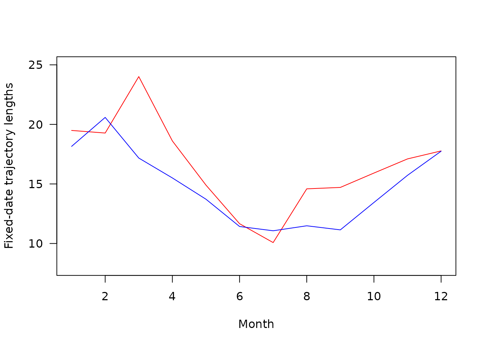
#Second figure: Directionality
plot(SNSfdT$monthFDT,SNSfdT$fdtrajZooDir,type="l",las=1,ylab="Fixed-date trajectory directionality",xlab="Years",ylim=c(0.36,0.45),col="red")
points(NNSfdT$monthFDT,NNSfdT$fdtrajZooDir,type="l",col="blue")
There is tendency of fixed-date trajectories to have high directionality and low length in summer months and conversely in winter. This is likely to be a sampling effect. Although the sampling effort is rather continuous throughout the year in CPR data, winter zooplankton communities are less abundant making their measured composition more stochastic. This is reflected in noisier fixed-date trajectories in winter.
Nonetheless, a metric of peculiar interest in fixed-date trajectories might be convergence:
#We will do it for the two sites (NNS and SNS) separately, so lets pull them apart
SNSfdtraj <- subsetTrajectories(fdtrajNSZoo,site_selection = "SNS")
NNSfdtraj <- subsetTrajectories(fdtrajNSZoo,site_selection = "NNS")
#Then we need to keep only the years during which the fixed-date trajectories all have associated ecological states (this is because we want to perform a symmetric convergence test)
selecSNS <- as.numeric(names(which(table(SNSfdtraj$metadata$times-SNSfdtraj$metadata$dates)==12)))
selecNNS <- as.numeric(names(which(table(NNSfdtraj$metadata$times-NNSfdtraj$metadata$dates)==12)))
#change the distance matrices
SNSfdtraj$d <- as.dist(as.matrix(SNSfdtraj$d)[floor(SNSfdtraj$metadata$times)%in%selecSNS,floor(SNSfdtraj$metadata$times)%in%selecSNS])
NNSfdtraj$d <- as.dist(as.matrix(NNSfdtraj$d)[floor(NNSfdtraj$metadata$times)%in%selecNNS,floor(NNSfdtraj$metadata$times)%in%selecNNS])
# and change metadata
SNSfdtraj$metadata <- SNSfdtraj$metadata[floor(SNSfdtraj$metadata$times)%in%selecSNS,]
NNSfdtraj$metadata <- NNSfdtraj$metadata[floor(NNSfdtraj$metadata$times)%in%selecNNS,]
#Now we can compute the convergence!
SNSfdtrajConv <- trajectoryConvergence(SNSfdtraj,
symmetric = TRUE)
NNSfdtrajConv <- trajectoryConvergence(NNSfdtraj,
symmetric = TRUE)
library(corrplot)## corrplot 0.95 loadedLet’s now visualize it for SNS:
corrplot(matrix(as.vector(SNSfdtrajConv$tau)*as.numeric(SNSfdtrajConv$p.value<0.05),12,12)) And for NNS:
And for NNS:
corrplot(matrix(as.vector(NNSfdtrajConv$tau)*as.numeric(NNSfdtrajConv$p.value<0.05),12,12))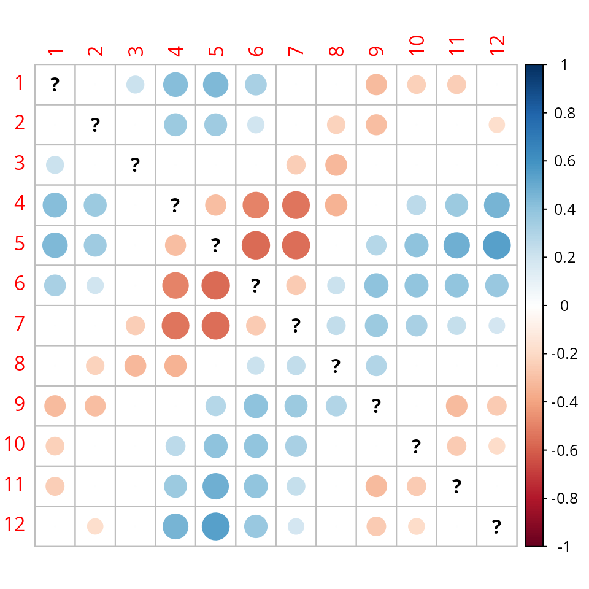 In those graphs, blue indicates divergence while red indicates convergence of fixed date tajectories. In both part of the North Sea, we see a convergence of spring and summer months and a divergence winter month with summer months. One possible interpretation is that summers and winters are getting more contrasted.
3.6 Advances and delays in community composition
The last aspect that CETA allows to investigate is cyclical shifts
(e.g. advances and delays similar to approaches in phenology). The
function that does it is cycleShifts(). This one will take
a bit long to compute, it works a lot!
CSNSZoo <- cycleShifts(x_northseaZoo,
cycleDuration = 1)
head(CSNSZoo)## sites dateCS timeCS timeRef timeScale cyclicalShift
## 1 NNS 0.04166667 1960.042 1959.042 1 0.025631729
## 2 NNS 0.04166667 1961.042 1959.042 2 0.021382801
## 3 NNS 0.04166667 1962.042 1959.042 3 0.061321501
## 4 NNS 0.04166667 1963.042 1959.042 4 0.020736485
## 5 NNS 0.04166667 1964.042 1959.042 5 -0.001200648
## 6 NNS 0.04166667 1965.042 1959.042 6 -0.017846575Broadly, cycleShifts() works by compute
cyclicalShift by comparing the position of an
ecological state of interest on its cycle (at a date
dateCS,and time timeCS) to the
position of the ecological state of same date on a reference
cycle (at time timeRef). The two ecological states
are separated by an amount of time timeScale. Which cycles
to choose to compute a cyclical shift can be rather arbitrary so instead
we can simply use all possible comparison and extract a trend from a
graph of cyclicalShift against timeScale. We
do it below for all dates (i.e. months of the year) and display only one
of the graphs as an example:
slopes <- integer(0)
for (i in c("SNS","NNS")){
for (j in unique(CSNSZoo$dateCS)){
#prepare the relevant subset
subsetCS <- subset(CSNSZoo,sites==i)|>subset(dateCS==j)
#compute a slope
model <- lm((subsetCS$cyclicalShift*365)~subsetCS$timeScale)
#Note that we multiply the shift by 365 to get in days
sum <- summary(model)
slopes <- rbind(slopes,data.frame(i,j,model$coefficients[2]))
if (i=="NNS"&j==unique(CSNSZoo$dateCS)[5]){
plot(x=subsetCS$timeScale,y=subsetCS$cyclicalShift*365,ylim=c(-182.5,182.5),
col=rgb(0,0,0,0.2),
las=1,
pch=16,
xlab="Time scale (Years)",
ylab="Seasonal offset (days)",
main="Cyclical shifts for May in NNS")
abline(h=0)
abline(model,lwd=2,col="orangered")
moys <- tapply(subsetCS$cyclicalShift*365,subsetCS$timeScale,mean)
points(x=as.numeric(names(moys)),y=moys,pch=21,type="b",bg="dodgerblue2",cex=1.2)
}
}
}
Let’s now show all the trends, first for the SNS:
plot(x=slopes$month[slopes$sites=="SNS"]*12+0.5,
y=slopes$slope[slopes$sites=="SNS"]*10,
las=1,type="b",
ylab="Cyclical shift in SNS (days/decade)",
xlab="Month")
#note the multiplication by ten to get a slope in days per decade
abline(h=0)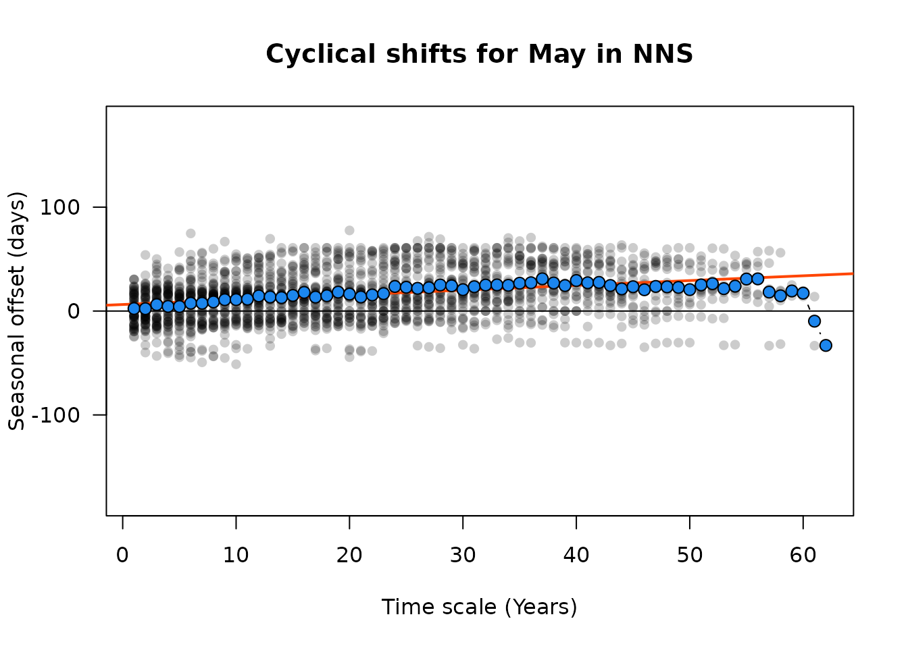
And then for the NNS:
plot(x=slopes$month[slopes$sites=="NNS"]*12+0.5,
y=slopes$slope[slopes$sites=="NNS"]*10,
las=1,type="b",
ylab="Cyclical shift in NNS (days/decade)",
xlab="Month")
#note the multiplication by ten to get a slope in days per decade
abline(h=0)The two regions of the North Sea exhibit a similar pattern of cyclical shift: there is maximal advance (positive shift) in spring and autumn. The advance computed is not negligible, communities take around 6 to 12 days of advance every decade at those months (at least in term of composition)!